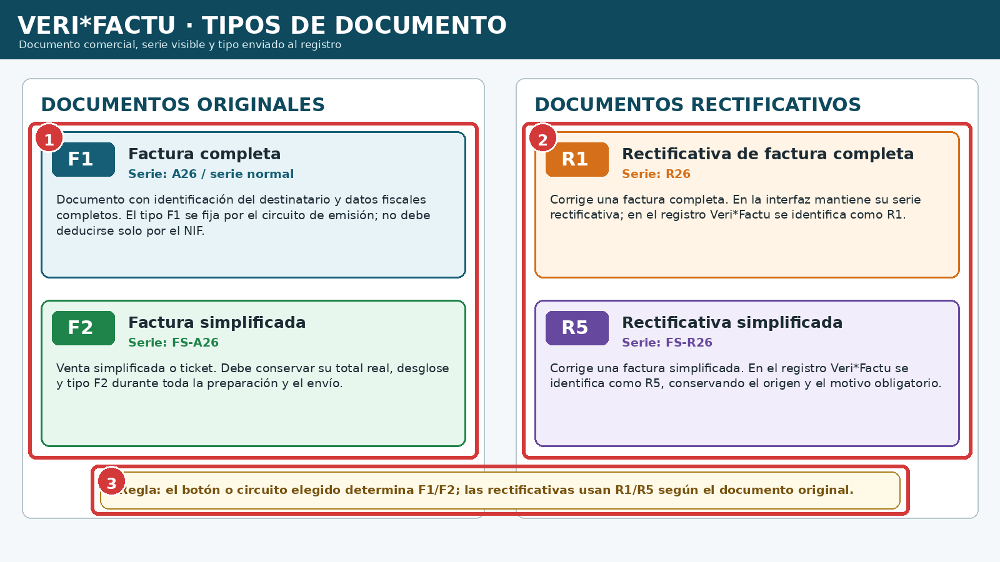
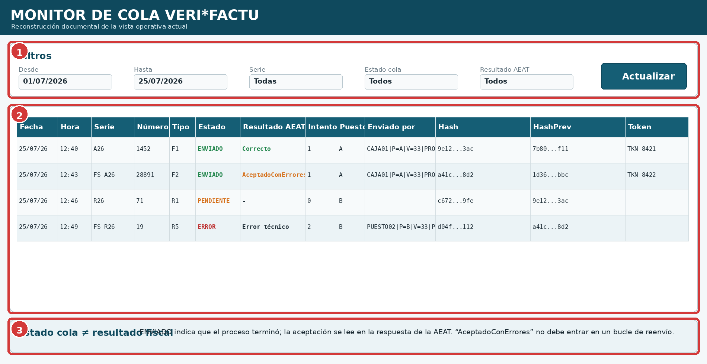
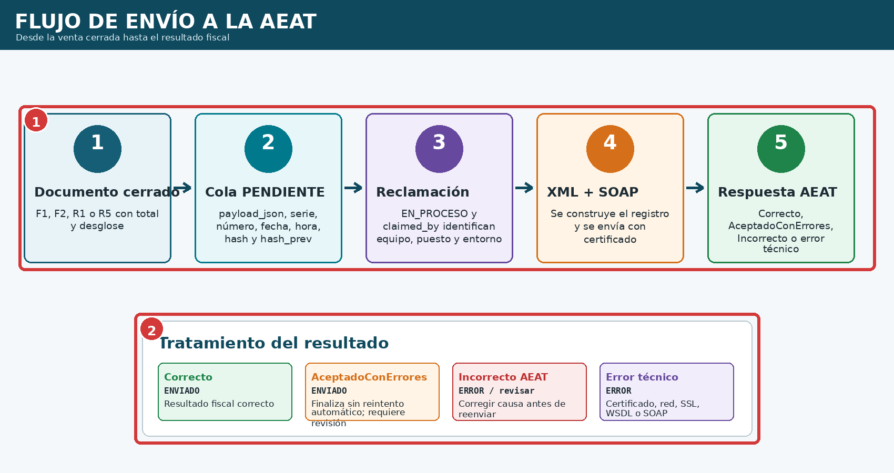
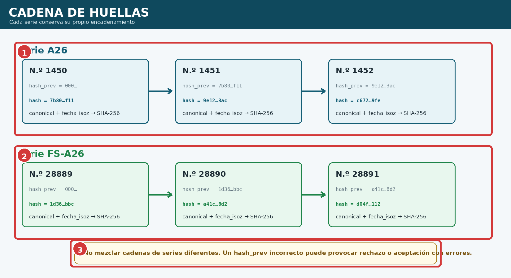
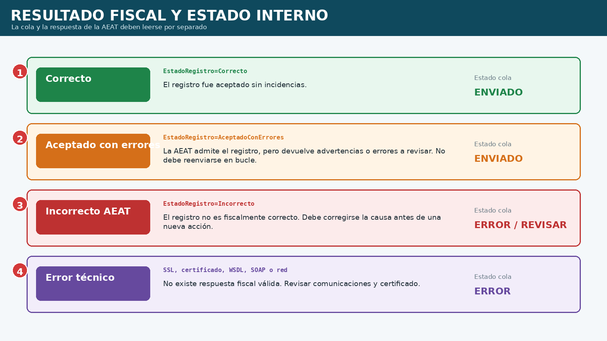
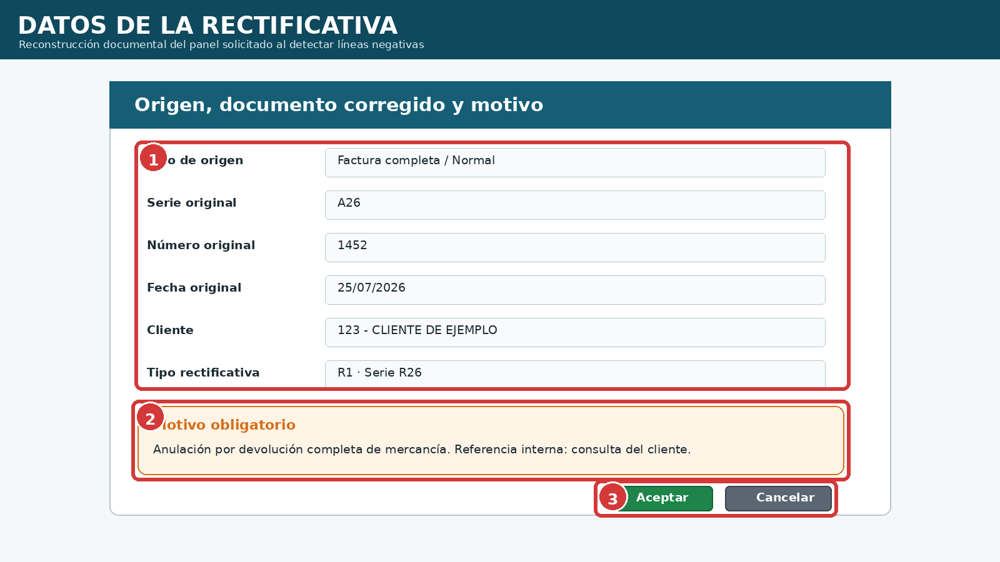
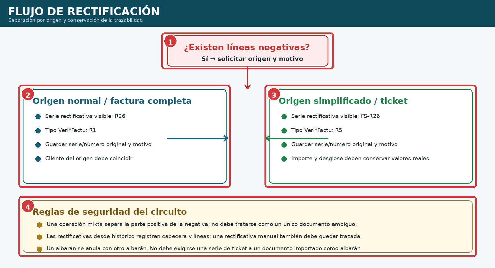

VeriFactu y documentos rectificativos
Primera edición 1.0 FINAL · Manual completo y auditado
9.1 Tipos de documento, series y códigos de registro #
La serie visible y el tipo remitido a VeriFactu están relacionados, pero no son el mismo dato. El circuito de emisión fija F1 o F2; no debe deducirse únicamente por la existencia de NIF. Las rectificativas conservan series propias y se envían como R1 o R5.

| N.º | Bloque | Interpretación |
|---|---|---|
| 1 | Originales | F1 completa; F2 simplificada. |
| 2 | Rectificativas | R1 corrige completa; R5 corrige simplificada. |
| 3 | Selección | El circuito elegido fija el tipo. |
9.2 Cola VeriFactu y estados internos #
verifactu_queue conserva el registro preparado. El estado interno describe el trabajo de la cola, no la aceptación fiscal.
| Estado | Significado |
|---|---|
| PENDIENTE | Preparado, no reclamado. |
| EN_PROCESO | Reclamado por un equipo o puesto. |
| ENVIADO | Intento finalizado; el resultado fiscal se lee en la respuesta. |
| ERROR | Fallo técnico o resultado que exige revisión. |
| Campo | Función |
|---|---|
| tipo_factura | F1, F2, R1 o R5. |
| total_con_iva | Importe real. |
| payload_json | Contenido para el XML. |
| hash / hash_prev | Huella actual y enlace previo por serie. |
| fecha_isoz / canonical | Fecha con zona y representación canónica. |
| claimed_by | Equipo, puesto, versión y entorno. |
9.3 Monitor de la cola #
El monitor separa documento, estado operativo y resultado fiscal. También muestra intentos, puesto, equipo, huellas y token.

| N.º | Zona | Uso |
|---|---|---|
| 1 | Filtros | Fechas, serie, estado y resultado. |
| 2 | Grid | Documento, intentos, puesto, equipo, hashes y token. |
| 3 | Aclaración | ENVIADO no equivale por sí solo a aceptación. |
9.4 Flujo de envío a la AEAT #

- Cerrar y revisar el documento.
- Insertar payload, huella y hash anterior.
- Reclamar como EN_PROCESO.
- Construir XML y enviar con certificado.
- Guardar y clasificar la respuesta.
- No reenviar automáticamente AceptadoConErrores.
9.5 Cadena de huellas por serie #
La huella SHA-256 se basa en la representación canónica y la fecha con zona. hash_prev enlaza con la huella anterior de la misma serie.

9.6 Resultado fiscal frente a estado de cola #

| Resultado | Tratamiento |
|---|---|
| Correcto | ENVIADO, aceptado sin incidencias. |
| Aceptado con errores | ENVIADO, sin bucle; revisar detalle. |
| Incorrecto AEAT | Corregir antes de otra acción. |
| Error técnico | Resolver certificado, red, SSL, WSDL o SOAP. |
9.7 Incidencias conocidas y diagnóstico #
| Código / síntoma | Revisión |
|---|---|
| 4102 | DescripcionOperacion y tipo. |
| 1189 | Destinatarios y reglas F1/F2. |
| 1054 | Usar payload_json. |
| 2003 | hash_prev de la misma serie. |
| 2004 | Fecha ISO con desplazamiento real. |
| ImporteTotal 0,00 en F2 | Confirmar total real del payload. |
| AceptadoConErrores se repite | Tratarlo como finalizado. |
9.8 Creación de una rectificativa #
Las líneas negativas solicitan origen, serie y número originales, cliente y motivo obligatorio. El cliente debe coincidir con el original.

9.9 Circuitos normal, simplificado, mixto e histórico #

- Normal: R26 y R1.
- Simplificada: FS-R26 y R5.
- Las operaciones mixtas separan la parte positiva y negativa.
- Histórico y rectificativas manuales deben conservar cabecera, líneas, cliente y motivo.
- Un albarán se anula con otro albarán; un albarán histórico no debe pedir una serie de ticket inexistente.
9.10 Procedimiento recomendado #
- Identifique producción o pruebas.
- Emita con el tipo correcto.
- Revise serie, número, cliente, total e IVA.
- Compruebe la cola y diferencie estado de resultado.
- Revise hashes, puesto y equipo si hay incidencia.
- Para rectificativas, localice el original, elija origen y escriba el motivo.
- Compruebe R1/R5 y la serie rectificativa.
- No repita automáticamente AceptadoConErrores.
9.11 Lista final de comprobación #
- Entorno identificado.
- Tipo F1/F2/R1/R5 correcto.
- Serie, número, total e IVA revisados.
- payload_json, hash y hash_prev correctos.
- Fecha ISO con zona correcta.
- Puesto y equipo visibles.
- Estado y resultado separados.
- AceptadoConErrores sin bucle.
- Original, cliente y motivo comprobados.
- Cuadros, números y leyendas coinciden.